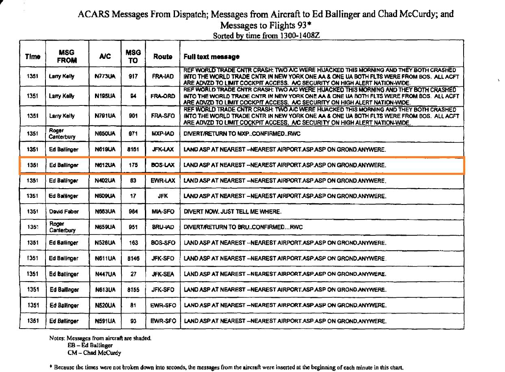
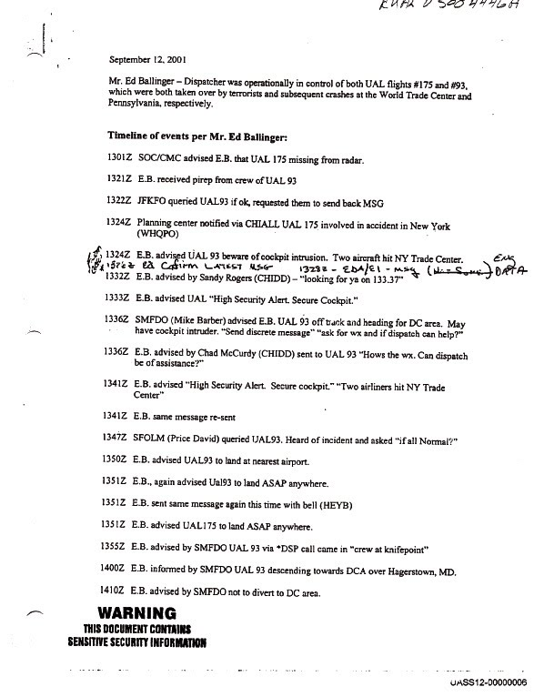
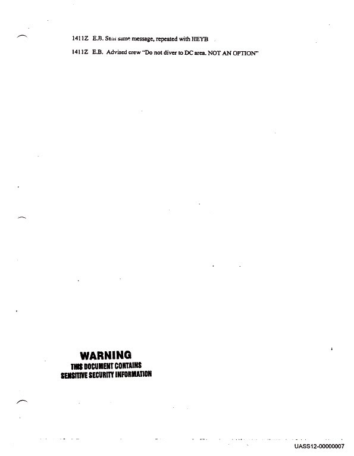
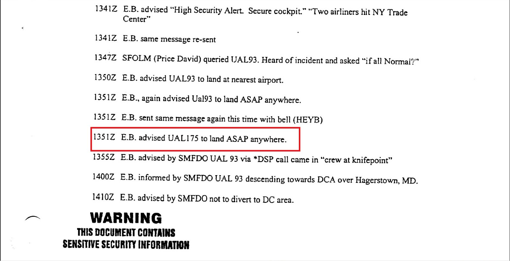
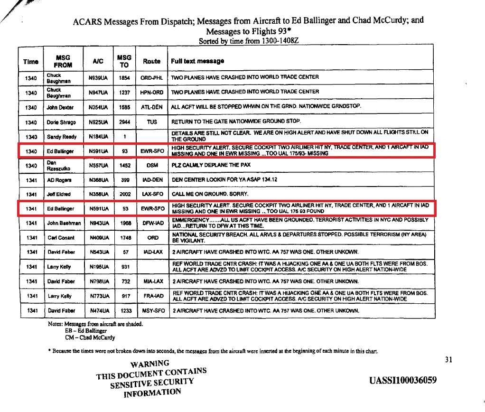

As
known to many 9/11 researchers who dealt with the ACARS issue, Ed
Ballinger, the United Airlines flight dispatcher in command for all
United's East to West coast flights on the morning of 9/11, sent an uplink
message to United 175 at 9:23 EDT, twenty minutes after the alleged
crash of the aircraft against the South Tower in New York. This is a
widely known and officially recognized fact. Not only we have the
referred log from the printout of United ACARS record from
Ballinger's desk, as provided by Ballinger himself to the 9/11
Commission and eventually released in 2009 [
1]. The 9:23 EDT uplink was also
addressed by Team 7 during Ed Ballinger's interview on April 14, 2004
in Washington, DC (
2). The implications of this
message and, in particular, of its format will be fully analyzed in a next
post.
The chart of ACARS messages from UAL dispatch
One thing many people ignore, however, is that
Ballinger sent
a subsequent uplink to United 175 at 9:51 EDT, that is 48
minutes after United 175 had officially crashed in New York and
28 minutes after the previous confirmed ACARS communication to the
aircraft sent at 9:23 EDT. This information is contained in an official
record apparently released through FOIA in 2009 called "
T7 B18 United AL 9-11 ACARS Fdr- Entire
Contents- ACARS Messages 569.pdf. This document contains a
chart of messages to and from United aircraft from 13:00 to 14:08 UTC,
including United 175 and United 93. Unlike the
Printout of ARINC logs released on
mid December 2011, whose authenticity is far from being unquestionable,
this document clearly reports the stamp "WARNING: THIS DOCUMENT
CONTAINS SENSITIVE SECURITY INFORMATION" on each of the 66 pages, as
required by the Department of Homeland Security, and particularly the
Transportation Security Administration, under
2003 CFR Title 49, Volume 8. Also,
each page is marked with an unique Bates number (from
UASSIl00036029 to UASSIl00036090.04).
The first eye-catching feature of this document is the fact that all
downlinks (i.e. air-to-ground messages sent from aircraft to
dispatchers) appear as unreadable or hardly readable. For some unspecified reason, these rows were apparently marked with a yellow highlighter or a similar tool in the original paper record, as confirmed by the warning "Notes: Messages from
aircraft are shaded" reported on each page. As known, shaded text portions have a very bad rendering once xeroxed or scanned. As a result, the downlink rows in the chart are probably well readable in the original paper version, but in the PDF publicly available they appear as they were "masked out". In some cases, it is possible to read the UTC
time, the flight number, the tail number, the targeted dispatcher (EB =
Ed Ballinger or CM = Chad McCurdy), the route and at least part of the
text message behind the highlighting. In other cases, it is completely impossible to figure out the text behind the dark shade.
Another surprising aspect of this document is the fact that the
timeline ends at an abnormal and unusual time such as 14:08 UTC
(10:08 EDT). As widely known to many ACARS researchers, seven uplink
messages were sent out from UAL dispatchers to United 93 between 14:10
UTC and 14:20 UTC (Messages #18 - 25 in
Winter's list) and therefore they
are not reported in this document. While there is still a fierce debate
as to whether and which of such messages were received by the aircraft,
it is an ascertained and unquestionable fact that they were sent.
Therefore, we would expect that the timeline would end at least at
14:30 UTC, if not later, so that all messages related to United 93
would be included in the chart. Remarkably, messages to and from other
United aircraft of secondary importance were included in this table, but
for some unspecified reason the last seven messages to United 93, one
of the four aircraft involved in 9/11, were not. Again, we won't
speculate here about the reasons of such decision. However, the fact
that the timeline ends at an unexpected time such as 14:08 UTC, along
with the exclusion of messages to United 93 which are of vital
importance for the ACARS research on 9/11, is something that we
wouldn't hesitate to define as suspicious.
In spite of all this abnormal redaction and missing data, this document
uncovers an information of groundbreaking importance for the purposes
of our ACARS research at page 48: at 13:51 UTC (9:51 EDT) Ballinger
sent a bunch of uplinks to several United aircraft, including United 93
and - which is more surprising - United 175.
The same text message, "LAND ASP AT NEAREST --NEAREST AIRPORT.ASP .ASP
ON GROND.ANYWERE", was sent to Flight 8151, 175, 63, 17, 163, 8146, 27,
8155, 81, 93 and 161 (in some cases twice to the same aircraft within
the same minute, see p. 48 and 49).
|  |
| p.
48. Framed in red the uplink sent to United 175 at 13:51 UTC (9:51 EDT)
|
Ballinger's timeline from September 12, 2001
A conclusive confirmation that Ballinger sent a late uplink to United 175 at 13:51 UTC (9:51 EDT) comes from his own timeline. "
T7 B20 Timelines 9-11 2 of 2 Fdr- Ed Ballinger Timeline 243", released in 2009, is a 2 pages document which reports the timeline of the events as compiled by Ed Ballinger on September 12, 2001, the day after the tragic event (the date is reported at the top of the document). The chart includes the main events on the morning of 9/11 according to Ballinger from 13:01 UTC to 14:11 UTC, including uplinks and downlinks to/from both United aircraft involved in the accidents along with other relevant information. Just like the chart of United Airlines ACARS from dispatch shown in the section above, this document is an official record. Along with the stamp "WARNING: THIS DOCUMENT
CONTAINS SENSITIVE SECURITY INFORMATION", each page is provided with a unique Bates number (UASS12-00000006 and UASS12-00000007). This timeline confirms that Ballinger sent an uplink at 13:51 UTC and remembered about this detail on the day after 9/11:
|  |
| Ballinger's timeline of 911 events, p. 1 |
|  |
| Ballinger's timeline of 911 events, p. 2 |
|  |
| Framed in red the row confirming the uplink sent to United 175 at 13:51 UTC (9:51 EDT) |
One more time, we have evidence coming from an official document of unquestionable authenticity. The author (the same dispatcher who had sent the uplink the day before) and the date of the document (September 12, 2001) provide additional evidential authenticity to this record and also corroborate the authenticity of the Chart of UAL ACARS from UAL dispatch we have seen in the section above. Although the ACARS log for this uplink has not yet made public for reasons we won't speculate in this article, both documents reported here corroborate themselves and prove beyond any doubt that Ed Ballinger actually sent an uplink to United 175, 48 minutes after the alleged crash time.
Questions and implications of this new finding
The first obvious question raised by this new evidence is 'why'
should Ballinger send such an order ('Land asap at the nearest airport') to
the cockpit of United 175 at 9:51 EDT if he did not know from some
source that the aircraft was actually still airborne. The supporters of
the official story might argue that Ballinger may not be aware at that
time that the second aircraft which had crashed in New York was in fact
one of the United flights under his control that morning. However, we
know from Ballinger's interview to Team 7 in April 2004 that Ballinger
was officially informed by Andy Studdert, Chief Operating Officer and
Executive Vice President of United Airlines, at 9:24 EDT that United
175 had been involved in an accident in New York:
[U]
At 9:19 a.m. Ballinger began sending out the following ACARS message to
his airborne flights: "Beware any cockpit intrusion ... Two aircraft in
NY hit Trade Center Builds... " This message went to United flight 161
at 9:19 a.m., and to flights 91, 23, 8117, 8179 at 9:20 a.m. and flight
17 at 9:21 a.m.
[...]
[U] At 9:23 a.m. Ballinger transmitted his "cockpit intrusion" message
(identical to the previous ones) to Flights 27, 175, 81, 8151, 8155,
8179 and 161. With respect to this message to Flight 175, Ballinger
indicated that he was aware that two commercial aircraft had hit the
World Trade Center and that Flight 175 had been hijacked, but he wasn't
sure whether he knew that it had crashed by this point (in which case
the message would simply have been caused by his haste to get the word
out to all of his flights as soon as possible).
[U] At 9:24 a.m. Ballinger received along with all United
Airlines stations the following alert (sent at 9:22 a.m.) in the name
of Andy Studdert: "Flt 175-11 BOS/LAX has been involved in an accident
at New York. The Crisis Center has been activated. United
Airlines policy strictly prohibits giving information or making
statements about the incident to the news media or public officials by
any employee. WHQPR will release any and all subsequent information."
[U] Simultaneously with receipt of the Studdert message, Ballinger
transmitted the same "cockpit intrusion" message to Flights 93, 283,
83, 91, 23, 8179, 8146, 8117 and 17 at 9:24 a.m.-
For those who do not know this interview yet, I strongly suggest to
read the document in its entirety. The Commission's
discomfort in explaining why
Ballinger sent a message to United 175 at 9:23 EDT, twenty minutes
after the time of the alleged crash in New York, is evident. Note how
the Commission remarks that Studdert's communication was sent at 9:22
EDT but received by Ballinger only two minutes later, at 9:24 EDT, a fact which is confirmed however by several sources, among the others the Ballinger's timeline presented above (see the row "1324Z Planning center notified via CHIALL UAL 175 involved in accident in New York (WHQPO)"). It
is obvious that the Commission is striving here to present a credible
explanation for this uplink, which
raises itself a lot of questions. To provide additional 'credibility' to this theory, the Commission also suggests that the 9:23 EDT message was "caused by [Ballinger's] haste to get the word
out to all of his flights". Nonetheless, doing so, the Commission
also marks 9:24 EDT as the time when Ballinger was officially informed
by the airline that United 175 had suffered an accident. This raises
the question, among many others we will list below, why did the
dispatcher feel the need to send a subsequent uplink to United 175 at 9:51
EDT, 27 minutes after receiving such information. It is not surprising that no reference to this late uplink is made throughout
Ballinger's interview to Team 7.
United 175 first "missing", then "found"
The uplink sent at 9:51 EDT offers a possible explanation to
another tormenting question: why did Ballinger still consider United
175 as "missing" at around 9:40 EDT and, only one minute later, as
"found". We know about this sudden 'change of awareness' from two of
his uplinks sent in rapid sequence to United 93 between 9:40 and 9:41
EDT:
DDLXCXA
CHIAK CHI68R
.CHIAKUA 111340/ED
CMD
AN N591UA/GL CLE
- QUCHIAKUA 1UA93 EWRSFO
- MESSAGE FROM CHIDD –
/HIGH SECURITY ALERT. SECURE COCKPIT.ADMIT NO ONE IN TO COCKPIT.
TWO AIRLINER HIT NY , TRADE CENTER. AND 1 AIRCRAFT
IN IAD MISSIN
G AND ONE IN EWR
MISSING...TOO
UAL 175/93- MISSING
CHIDD ED BALLINGER
;09111341 108575 0638
DDLXCXA
CHIAK CHI68R
.CHIAKUA 111341/ED
CMD
AN N591UA/GL CLE
- QUCHIAKUA 1UA93 EWRSFO
- MESSAGE FROM CHIDD –
/HIGH SECURITY ALERT. SECURE COCKPIT.ADMIT NO ONE IN TO COCKPIT.
TWO AIRLINER HIT NY , TRADE CENTER. AND 1 AIRCRAFT
IN IAD MISSIN
G AND ONE IN EWR
MISSING...TOO
UAL 175/93 FOUND
CHIDD ED BALLINGER
;09111341 108575 0639
Both messages are also reported in the chart of ACARS messages to/from
United aircraft that is being analyzed in this post:
|  |
| Screenshot
from p. 31. Framed in red the uplinks sent by Ballinger to United 93 at
13:40 and 13:41 UTC
|
Within one minute, Ballinger sent two separate uplinks to United 93
with the same text message, but a different final information: the
first message (# 0638) reports "UAL 175/93 MISSING", while the second
one (# 0639) shows "UAL 175/93 FOUND". One more time, it is interesting
to note how the Commission tries to skirt around the real questions
raised by this sudden change of awareness by the dispatcher:
[U]
At 9:36 a.m Ballinger was aware of the following ACARS transmission
from fellow dispatcher [ ] to Flight 93: "Hows the wx. Can
dispatch be of any assistance?" At Ballinger's initiative, he had begun
to split his workload with [ ] at some point prior
to this.
[U]At that point, Ballinger's ACARS message was again changed with the
addition of "UAL 175-93 - missing" at the end. This communication went
out at 9:36 a.m. to Flights 8155 and 83; at 9:37 a.m. to Flights 283,
163, and 81; and at 9:41 a.m. to Flight 93. Finally, at 9:41 a.m.
Ballinger sent the previous message to Flight 93 again with the
addition at the end of "UAL 175/93 found."
No real explanation is provided as to why Ballinger first considered
United 175 and United 93 as "missing" (9:40 EDT) and
immediately after as "found" (9:41 EDT). If we believe to the
Commission, Ballinger had been already officially informed at 9:24 EDT
by the UAL Chief Operating Officer about the accident occurred to
United 175, as we have seen above. So why was he still looking for
United 175 sixteen minutes later, at 9:40 EDT, and considered the
aircraft as "missing"? And which information did he receive immediately after that led him to consider United 175 as "found" along with United
93?
Unfortunately no conclusive answers can be given to the above questions. It is clear, however, that something does not add up in the
official timeline reconstruction, as provided by the Commission in this
interview to Ballinger. We don't know nor we will try to speculate as to the possible source of Ballinger, however the most probable and logical conclusion is that the dispatcher received some information between 9:40 and 9:41 EDT that suggested him that United 175 had in fact not crashed and was not lost as reported by Andy Studdert and by the media.
Other reports appear to be consistent with our claim. For example, the document MFR 04017175 is the minutes from the interview by Team 7 and 8 to the United Airlines System Operations Control (SOC) Center and Crisis Center members on November 20, 2003 at the United Airlines SOC, Chicago, IL. Parts of this document are of extreme importance for our analysis and are reported below:
[U] When asked about
the technical capabilities of the ASD (airspace situational display)
program used by the dispatchers on their monitors to track planes, all
United representatives conferred that the program's display refreshes
every 60 seconds. If a plane was "squawking" a different code, the
United representatives did not believe that would change the appearance
of the track on the ASD. For instance, UAL 93, which was out of
communication for a longer time than UAL 175, appeared to be "coasting"
once the transponder was turned off. Barber did not think at the time
that modifying the transponder code would be apparent to dispatchers through the use of ASD.
[U]
McCurdy recollected that at the time of the crash into tower 2, the
display on Ballenger's monitor still showed UAL 175 at 31,000 ft, having
just deviated from the normal flight plan and heading into a big tum
back east. The track on Ballenger's ASD was frozen long after it was known the plane had crashed into tower 2.
[U] Rubie Green interjected that the program was designed to maintain a
tag on a flight as it moved across the map from center to center.
Various code changes would not affect the track as it appeared to the
dispatcher. McCurdy said that the ASD provides a rough track of a
plane's progress; minute alterations in the flight plan wouldn't be
reflected on the dispatchers display because such details only mattered
to the pilot and the air traffic controller. "The purpose of the track
is to keep the plane out of the path of a thunderstorm," McCurdy said.
[U] When they saw the second plane go in on CNN, instinctively Barber
thought it was UAL 175, but they did not a positive identification right
away. Because the scene caused much disturbance on the dispatch floor,
Barber told the staff to stay at their desks and focus on their jobs.
Barber noted that his log stated that at 8:20 a.m. (CT) UAL 175 was
confirmed.
The last sentence in bold is pretty obscure, but extremely significant. The impression is that some information after the word "confirmed" was truncated or the sentence was intentionally left cryptic. Taking into a account that the location is United Airlines’ System Operations Control (SOC) center just outside Chicago, however, the reference to "his log" is a clear indication to Barber's ACARS log, which leads to conclude that at 8:20 Central Time (9:20 EDT) United 175 still appeared to be a "confirmed" aircraft according to the ACARS record and therefore could not be the same aircraft that every one at the SOC center had seen crashing against the South Tower on TV during the live CNN coverage. The entire sentence is of vital importance to understand the situation at the United SOC center around 9:20 EDT and may shed light to the subsequent behavior by Ballinger. Barber suggests that, when he saw the second plane hitting the tower in New York on TV, he instinctively suspected it could be United 175 because that flight had been already reported as hijacked and off-course, however this information was not confirmed by the ACARS log nor by the ASD monitor. If our interpretation is correct, then this is an additional evidence that no failure log had been yet reported by ARINC to the originator (UAL dispatch) 17 minutes after the alleged impact. This fact is pretty surprising if we consider that Ballinger had sent his first uplink to United 175 at 9:03 EDT ("How is the ride. Anything dispatch can do for you")
soon after being informed of the possible hijack and only instants after Sandy Rogers had sent another uplink at the same time ("NY aproach lookin for ya on 127.4"). According to
MFR 04017215, "Rogers-initiated message [was] not received by the aircraft". If this were true, then a failure report should have been sent to the UAL dispatch and Barber would have not seen United 175 as "confirmed" at 9:20 EDT. Both information are mutually exclusive. If an aircraft crashes, it just stops sending tracking messages to the ARINC CPS. The CPS keeps on searching for the aircraft for a maximum of 11 minutes, then generates a Reason Code 231 and sends a failure report back to the originator. But this is in conflict with an aircraft "confirmed". The most probable explanation for this discrepancy is that the information contained in MFR 04017215 is false (and remains unsubstantiated in any case). Both Rogers' and Ballinger's uplinks at 9:03 EDT were in fact received by the aircraft and this explains why Barber still saw the aircraft as confirmed in his own logs and also explains why the subsequent uplink sent by Ballinger at 9:23 EDT, as reported in the printout of his personal logs, shows two timestamps and has not the same format as the last message sent to United 93 at 10:21 EDT:
DDLXCXA CHIAK CH158R
.CHIAKUA DA 111323/ED
CMD
AN N612UA/GL PIT
- QUCHIYRUA 1UA175 BOSLAX
- MESSAGE FROM CHIDD -
/BEWARE ANY COCKPIT INTROUSION: TWO AIRCAFT IN NY . HIT TRADE C
NTER BUILDS...
CHIDD ED BALLINGER
;09111323 108575 0574
To make a long story short: such format requires either one of the following conditions: United 175 was airborne or had crashed less than 11 minutes before. Since the crash had allegedly occurred 20 minutes before, only the first condition applies here.
United 175 "was not acting appropriately"
Michael Ruppert dedicated a section of his book Crossing the Rubicon to Ed Ballinger. Parts of this section are relevant for our analysis and are reported below:
Suburban Flight Dispatcher to Recount Worst Day
Today, Ed
Ballinger will speak to a roomful of strangers about the one subject he
doesn’t care to discuss: The first two hours of his shift as a flight
dispatcher for United Airlines on the morning of September 11, 2001.
The
Arlington Heights resident and former United Airlines employee will
meet with a sub-committee of the 9/11 commission in Washington, DC, so
panel members can decide whether his testimony warrants his appearance
before the full commission.
Ballinger is there because he was in
charge of United Flights 175 and 93 when they crashed into the World
Trade Center and a field near Shanksville, PA.
Because
perhaps, just perhaps, offering his story will calm the whispering
thought that troubles him still: If he’d been told the full extent of
what was unfolding sooner that morning, he might have saved Flight 93.
“I
don’t know what [the panel appearance] is going to be,” he said Tuesday
after arriving in the capital. “They want to know what I did and why.
I’ve been told it’s not finger pointing. It’s just finding out what
happened.”
[...]
“When
September 11 came along, that morning, I had 16 flights taking off from
the East Coast of the US to the West Coast,” he said. “When I sat down,
these 16 flights were taking off or just getting ready to take off.”
[...]
Ballinger contacted all his flights to warn them. But United Flight 175 “was not acting appropriately.”
He
asked Flight 175 to respond. The pilot didn’t reply and Ballinger was
forced to conclude he’d been compromised and that he was rogue.
[This is exactly what long-standing FAA procedure told him to assume. See Chapter 17.]
By now, the situation was terribly different from previous hijackings Ballinger had handled. In two hours, he sent 122 messages.
“I
was like screaming on the keyboard. I think I talked to two flights
visually. The rest was all banging out short messages,” he said.
[...]
Ballinger said he was never the same after September 11, and was reluctant to return to work.
“That
first day, I’m lucky I didn’t hit anyone,” he said. “I drove through
every red light getting home as quickly as possible. I wanted to get
home and medicate myself.”
At work, he started second-guessing his own decisions and became, in his words, “ultra-ultra conservative.”
“I
came to a point where nothing was safe enough,” he recalled. “[I]
couldn’t even make a decision. It put you in jeopardy in every respect.”
At age 63, he was told to take a medical leave and long-term disability. He said he couldn’t do that. He was then asked if he could retire in six hours. A Social Security Administration psychiatrist put him on total disability.
"[United 175] was not acting appropriately" is a statement that may sound perfectly plausible to someone who never studied ACARS, especially if referred to an aircraft that has been hijacked and is off-course. For those who have knowledge about how ACARS communications between airline and aircraft work and about the timeline of the events, however, Ballinger's words sound sibylline at the very least.
To the benefit of those who are less familiar with ACARS, it should be reminded here that all messages sent by the airline to an aircraft (uplinks) are considered as delivered as long as no failure log is reported back to the originator (dispatcher). In other words, the lack of any
failure report is considered itself by the dispatcher as a confirmation that an uplink has been successfully delivered. Otherwise, whenever an aircraft fails to automatically acknowledge a message for any reason (including, of course, the case of a fatal accident), the ARINC CPS generates an error code and sends a failure report back to the dispatcher's printer and/or screen within some minutes. In this way, the dispatcher is notified that there is some problem with his aircraft and can take the appropriate steps to contact the aircraft through different channels. If United 175 had actually crashed at 9:03 EDT in New York, then Ballinger should not be
surprised that the cockpit was not replying to his uplinks or sending any other manual downlinks. Given the circumstances, this would be an expected behavior. Instead, Ballinger was possibly surprised that neither he nor any other dispatcher at United Airlines SOC center in Chicago had received any failure report from the ARINC CPS yet for two uplinks sent at 9:03 EDT and for one subsequent uplink sent at 9:23 EDT to United 175, as the statement by Mike Barber quoted above also suggests.
While the available documentation does not allow us to conclusively prove this assertion, everything points consistently into the same direction. Ballinger was being told by the TV and by the United management that his aircraft had crashed, but his ACARS log and his ASD were not confirming that, therefore he desperately kept on trying to contact his aircraft until 9:51 EDT. As a very experienced dispatcher, Ballinger knew that, if his aircraft had really crashed, this would reflect in his ACARS log with one or more appropriate failure reports for any unsuccessfully delivered uplink. As we have seen in both messages sent to United 93 between 9:40 EDT and 9:41 EDT, at that time Ballinger knew that two aircraft had suffered a fatal accident in New York, still he was not entirely convinced that one of them was actually United 175, as reported officially. If he were, then he would not consider United 175 first as "missing" and later as "found" at around 9:40 EDT and in no circumstances would he contact the aircraft again at 9:51 EDT. At the current state of the research, this appears to be the only plausible explanation for his otherwise sudden behavior and the only plausible explanation why, years after, he stated that United 175 "was not acting appropriately" as reported by Michael Ruppert.
Conclusion
For most, if not all the questions raised by this article no conclusive evidence can still be presented after almost 11 years. Several official records are still classified, other have been apparently declassified but are of dubious authenticity or have been surprisingly released with shaded information. Finding the "truth" within this tangle of omissions, conflicting reports, missing logs, different "FLoc" numbers etc. is beyond us. While we won't speculate here about the possible reasons for such omissions and discrepancies, it is an unquestionable fact that Ed Ballinger sent an uplink to United 175 at 9:51 EDT. The evidence comes from two official declassified records whose authenticity is beyond any doubt. Our only goal here is to present facts and raise questions which are still unanswered:
- if United 175 had crashed at 9:03 EDT against the South Tower, then why did the aircraft still appear as "confirmed" in Barber's log at 9:20 EDT?
- why does the log for the uplink sent by Ballinger to United 175 at 9:23 EDT show two timestamps although 20 minutes had already elapsed since the time of the alleged crash? After twenty minutes from the crash, we would expect that the ARINC CPS would react with a Reason Code 231 (see for example the first ICPUL block for American 77 at 10:00 EDT, 22 minutes after the alleged crash against the Pentagon), what would result in turn in a failure report on Ballinger's printer/screen and a log with one only timestamp, such as the last message sent to United 93 at 10:21 EDT. What does such discrepancy suggest?
- how could possibly Ballinger send an uplink to United 93 at 9:40 ending with "United 175/93 missing" and one minute later another message to United 93 ending with "United 175/93 found" if he had not received in the meanwhile (from some unidentified source) information suggesting that United 175 was in fact still airborne?
- why did Ballinger send another uplink to United 175 at 9:51 EDT, 48 minutes after the alleged crash, 28 minutes after sending the previous uplink (which apparently had not yet produced any failure report) and 27 minutes after being officially notified about the crash by Andy Studdert? Why should he urge an aircraft already declared as 'crashed' to land at the nearest airport?
- and finally, what did Ballinger actually mean with "[United 175] was not acting
appropriately"? How could a dispatcher with 44 years of professional career possibly overlook a failure report and keep on trying to contact his aircraft for almost one hour after the alleged crash time if he hadn't some information that led him to conclude that the aircraft was in fact not "lost"? The whole UAL dispatch in Chicago was focused on both United aircraft considered as hijacked. How could possibly all of them miss a failure report in their logs?
The supporters of the official story may argue again that the decision of sending a late uplink to United 175 may be simply the result of Ballinger's haste to get the word out or the result of the conflicting information he was receiving on the morning of 9/11. While this is possible in theory, then the question arises why did the Commission not bother to address this specific log during Ballinger's interview on April 14, 2004. Why is this log missing in the UAL record of Ballinger's logs released in 2009 under FOIA? Why are several pages from that document missing? Why are the logs for United 175 completely missing in the so called "Printout of ARINC logs" made public in December 2011?
The answers to the above questions will probably shed light one day to what really happened to United 175. Understanding what really happened to United 175 is the key to understand what really happened on 9/11.
{kind=link}
{kind=link}
{kind=link}
{kind=link}
{kind=link}
{kind=link}
{kind=link}